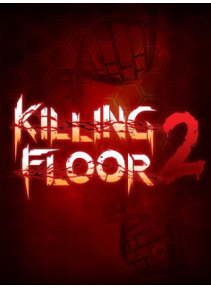

Killing Floor 2 este viitoarea generaţie de jocuri video dezvoltat de Tripwire Interactive. Acesta este o continuare a originalului Killing Floor, care a fost iniţial lansat ca un Unreal Tournament 2004 mod în 2005. Acesta aparând pe data de 14 mai 2009 pentru Microsoft Windows, şi pentru OS X pe 5 mai 2010. Killing Floor este un joc un first-person shooter, permiţând fiecarui jucator sa se deplaseze printr-un mediu 3D. Gameplay-ul este format din două tipuri de jocuri: Killing Floor şi Object Mode. În modul Killing Floor, jucatorul luptă cu valuri de specimene asemanatoare zombilor sau ZED, fiecare dintre care devine din ce în ce mai dificil, până când se încheie cu o batalie împotriva unui specimen "sef" numit Patriarh.
Preţ : 19,47 €